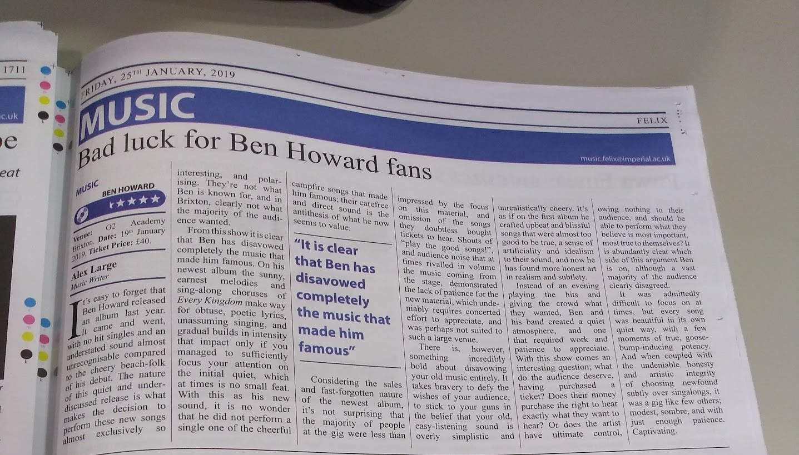
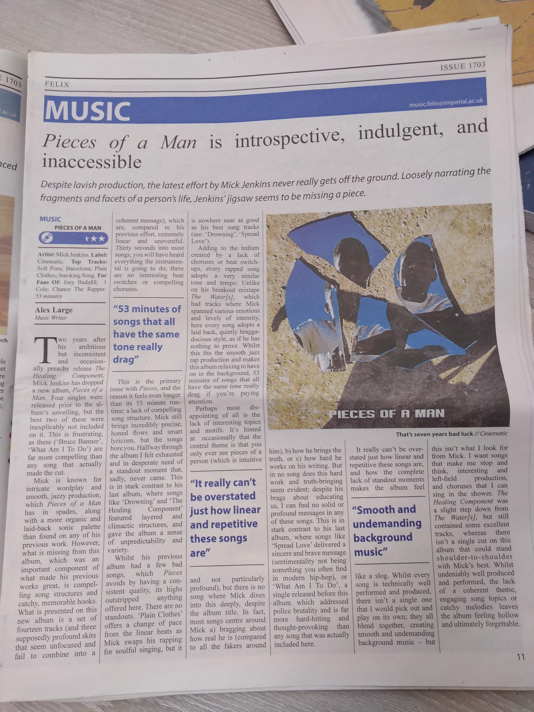

- I wrote some album reviews for the Imperial College London student university when I was doing my Masters! How cute! I was really thrilled about this, and it was really the first time my art-loving side poked out during my STEM years (apart from, you know, all the music I listened to and loved)
- Sadly, I swear I wrote more, and I totally lost them. I might still have them at my mum’s house, in the shed…
- I’m pretty sure I wrote reviews for:
- Daughters - You Won’t Get What You Want
- Ariana Grande - thank u, next
- Ben Howard - Noonday Dream
- Ben Howard - Live show I went to
- Mick Jenkins - Pieces of a Man
Jan 2019 - Ben Howard concert review
- This is so sweet to re-read after the album I’m talking about (Noonday Dream) is now in my ~top 3 albums of all time, and has been my most listened to albums (I was listening to it yesterday!), all these years later (and I really liked his two released after Noonday, “Collections from the Whiteout” and “Is It?”, too)
- Also it’s kinda cool how I think I’ve gotten better at writing since 2019. Admittedly, it’s hard to fit the format of an album review in a uni newspaper, and I was very rusty
It’s easy to forget that Ben Howard released an album last year. It came and went, with no hit singles and an understated sound almost completely unrecognisable compared to the cheery beach-folk of his debut. The nature of this quiet and under-discussed release is what makes the decision to perform these new songs almost exclusively so interesting, and polarising. They’re not what Ben is known for, and in Brixton, clearly not what the majority of the audience wanted.
From this show it is clear that Ben has disavowed completely the music that made him famous. On his newest album the sunny, earnest melodies and sing-along choruses of Every Kingdom make way for obtuse, poetic lyrics, unassuming singing, and gradual builds in intensity that impact only if you managed to sufficiently focus your attention on the initial quiet, which at times is no small feat.
With this as his new sound, it is no wonder that he did not perform a single one of the cheerful campfire songs that made him famous; their carefree and direct sound is the antithesis of what he now seems to value.
Considering the sales and fast-forgotten nature of the newest album, it’s not surprising that the majority of people at the gig were less than impressed by the focus on this material, and the omission of the songs they doubtless bought tickets to hear. Shouts of “play the good songs!”, and audience noise that at times rivalled in volume the music coming from the stage, demonstrated the lack of patience for the new material, which undeniably requires concerted effort to appreciate, and was perhaps not suited to such a large venue.
There is, however, something incredibly bold about disavowing your old music entirely. It takes bravery to defy the wishes of your audience, to stick to your guns in belief that your old, easy-listening sound is overly simplistic and unrealistically cheery. It’s as if on the first album he crafted upbeat and blissful songs that were almost too good to be true1, a sense of artificiality and idealism to their sound, and now he has found more honest art in realism and subtlety.2
Instead of an evening playing the hits and giving the crowd what they wanted, Ben and his band created a quiet atmosphere, and one that required work and patience to appreciate.3
With this show comes an interesting question: what do the audience deserve, having purchased a ticket? Does their money purchase the right to hear exactly what they want to hear? Or does the artist have ultimate control, owing nothing to their audience, and should be able to perform what they believe is most important, most true to themselves? It is abundantly clear which side of this argument Ben is on, although a vast majority of the audience clearly disagreed.4
It was admittedly difficult to focus on at times, but every song was beautiful in its own quiet way, with a few moments of true, goose-bump-inducing potency. And when coupled with the undeniable honesty and artistic integrity of choosing newfound subtly over singalongs, it was a gig like few others: modest, sombre, and with just enough patience5. Captivating.

Mick Jenkins
Two years after his ambitious but inconsistent and occasionally preachy release The Healing Component, Mick Jenkins has dropped a new album, Pieces of a Man. Four singles were released prior to the album’s unveiling, but the best two of these were inexplicably not including on it. This is frustrating, as these (‘Bruce Banner’, ‘What Am I To Do’) are far more compelling than any song that actually made the cut.
Mick is known for intricate wordplay and smooth, jazzy production, which Pieces of a Man has in spades, along with a more organic and laid-back sonic palette than found on any of his previous work. However, what is missing from this album, which was an important component of what made his previous works great, is compelling song structures and catchy, memorable hooks. What is presented on this new album is a set of fourteen tracks (and three supposedly profound skits that seem unfocused and fail to combine into a coherent message), which are, compared to his previous effort, extremely linear and uneventful. Thirty seconds into most songs, you will have heard everything the instrumental is going to do; there are no interesting beat switches or compelling choruses.
This is the primary issue with Pieces, and the reason it feels even longer than its 53 minute run-time: a lack of compelling song structure. Mick still brings incredibly precise, honed flows and smart lyricism, but the songs bore you. Halfway through the album I felt exhausted and in desperate need of a standout moment that, sadly, never came. This is in start contrast to his last album, where songs like ‘Drowning’ and ‘The Healing Component’ featured layered and climactic structures, and gave the album a sense of unpredictability and variety.
Whilst his previous album had a few bad songs, which Pieces avoids by having a consistent quality, its highs outstripped anything offered here. There are no standouts. ‘Plain Clothes’ offers a change of pace from the linear beats as Mick swaps his rapping for soulful singing, but it is nowhere near as good as his best sung tracks (see: ‘Drowning’, ‘Spread Love’).
Adding to the tedium created by a lack of choruses or beat switch-ups, every rapped song adopts a very similar tone and tempo. Unlike on his breakout mixtape The Water[s], which had tracks where Mick spanned various emotions and levels of intensity, here every song adopts a laid back, quietly braggadocious style, as if he has nothing to prove. Whilst this fits the smooth jazz rap production and makes this album relaxing to have on in the background, 53 minutes of songs that all have the same tone really drags if you’re paying attention.
Perhaps most disappointing of all is the lack of interesting topics and motifs. It’s hinted at occasionally that the central theme is that you only ever see pieces of a person (which is intuitive and not particularly profound), but there is no song where Mick dives into this deeply, despite the album title. In fact, most songs centre around Mick a) bragging about how real he is (compared to all the fakers around him), b) how he brings the truth, or c) how hard he works on his writing. But in no song does this hard work and truth-bringing seem evident; despite his brags about educating us, I can find no solid or profound message in any of these songs. This is in stark contrast to his last album, where songs like ‘Spread Love’ delivered a sincere and brave message (sentimentality not being something you often find in modern hiphop), or ‘What Am I To Do’, a single released before this album which addressed police brutality and is far more hard-hitting and thought-provoking than any song that was actually included here.
It really can’t be overstated just how linear and repetitive these songs are, and how the complete lack of standout moments make the album feel like a slog. Whilst every song is technically well performed and produced, there isn’t a single one that I would pick out and play on its own; they all blend together, creating smooth and undemanding background music - but this isn’t what I look for from Mick. I want songs that make me stop and think, interesting and left-field production, and choruses that I can sing in the shower. The Healing Component was a slight step down from The Water[s], but still contained some excellent tracks, whereas there isn’t a single cut on this album that could stand shoulder-to-shoulder with Mick’s best6. Whilst undeniably well produced and performed, the lack of a coherent theme, engaging song topics or catchy melodies leaves the album feeling hollow and ultimately forgettable.

Footnotes
-
November 2025 Alex note: of course, his debut has songs like Black Flies on it, so this is kind of a dumb take. But definitely taken as a whole, his debut is way more cheery ↩
-
I may not have been a big enough fan of Noonday Dream yet to point out lines like “Feed the dog / walk a mile / most things now / make me smile” which are just SO grounded and sweet and simple ↩
-
This is the third time I’ve said this - repetitive-ass. Tbf, I didn’t spend much time honing this - I was pretty self-coercive and stressed about my master’s degree, hard to carve out time for this kind of thing ↩
-
This wasn’t that interesting of a point, and it’s feeling very repetitive dude. Could’ve done with a second line of analysis IMO ↩
-
This doesn’t make sense dude. “This gig had just enough patience” - what? ↩
-
Third time I made this point ↩